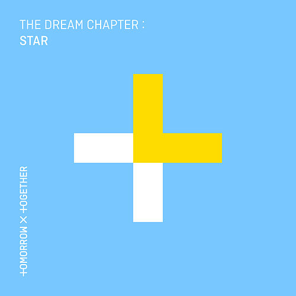
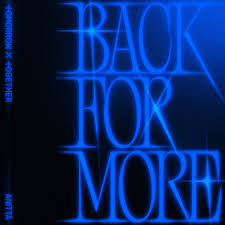
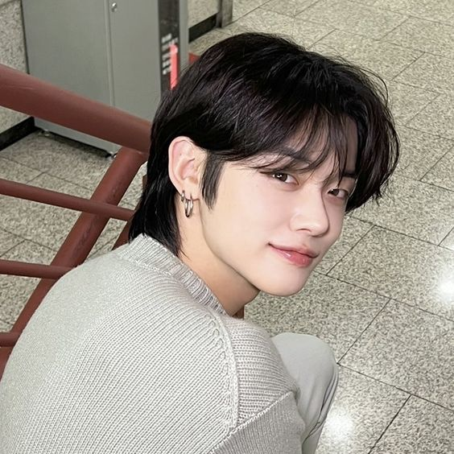
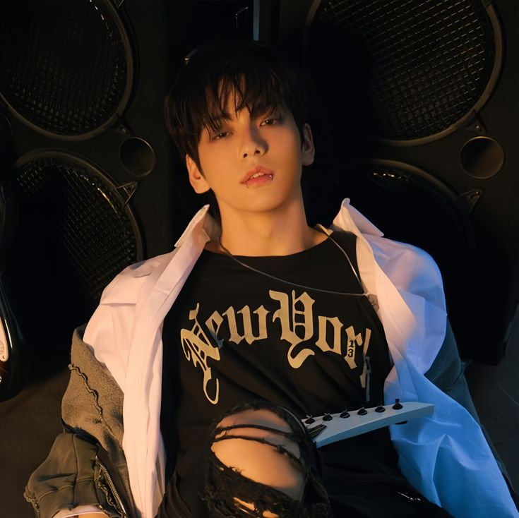
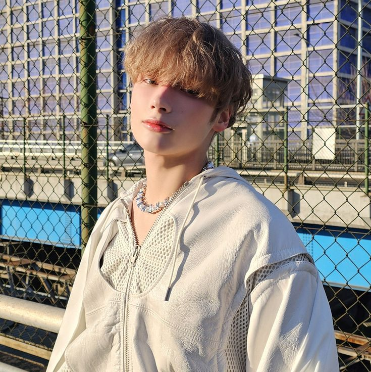

TOMORROW X TOGETHER comúnmente conocido como TXT, es un grupo de chicos surcoreano formado por Big Hit Music. Debutaron el 4 de Marzo de 2019 con su primer mini álbum The Dream Chapter: STAR.
TXT es un acrónimo de TOMORROW X TOGETHER. En coreano, el nombre del grupo es 투모로우바이투게더 (RR: Tumoroubaitugedeo), leído como "Tomorrow by Together" y transcrito a hangul; no tienen una versión coreana separada de su nombre. Su nombre hace referencia a cinco personas que "se unen bajo un mismo sueño con la esperanza de construir un mañana mejor".
En su primera entrevista con Section TV de MBC, el grupo declaró que prefieren ser referidos por su nombre completo en lugar de sus iniciales.
Discografía
Álbum
The Dream Chapter: MAGIC (2019)
The Chaos Chapter: FREEZE (2021)
The Chaos Chapter: FIGHT OR ESCAPE (repackage) (2021)
The Name Chapter: FREEFALL (2023)

Mini Álbum
The Dream Chapter: STAR (2019)
The Dream Chapter: ETERNITY (2020)
Minisode1: Blue Hour (2020)
Minisode 2: Thursday's Child (2022)
The Name Chapter: TEMPTATION (2023)

Colaboraciones
"0X1=LOVESONG (I Know I Love You) [Remix]" (2021)
"0X1=LOVESONG (I Know I Love You) feat. MOD SUN" (2021)
Salem Ilese - "PS5" (2022)
"Back for More (with Anitta)" (2023)
"Do It Like That" (2023)
Integrantes
Los miembros no tienen posiciones oficiales fijas, a excepción del líder, que es la única posición oficial que fue anunciada por BigHit Entertainment, el 14 de Enero de 2019. Todos pueden cantar, bailar y rapear.

Yeonjun
Choi Yeon-jun, es miembro del grupo de chicos de Corea del Sur, TOMORROW X TOGETHER. Nació el 13 de Septiembre de 1999.
Posición: Vocalista, Rapero, Bailarín
Ocupación: Cantante, rapero, bailarín, modelo, actor, diseñador, MC, compositor

Soobin
Choi Soo-bin, es miembro del grupo de chicos de Corea del Sur, TOMORROW X TOGETHER. Nació el 5 de Diciembre de 2000.
Posición: Líder, Vocalista, Rapero, Bailarín
Ocupación: Cantante, rapero, bailarín, MC, compositor
Beomgyu
Choi Beom-gyu, es miembro del grupo de chicos de Corea del Sur, TOMORROW X TOGETHER. Nació el 13 de Marzo de 2001.
Posición: Vocalista, Rapero, Bailarín
Ocupación: Cantante, rapero, bailarín, productor, compositor
Taehyun
Kang Tae-hyun, es miembro del grupo de chicos de Corea del Sur, TOMORROW X TOGETHER. Nació el 5 de Febrero de 2002.
Posición: Vocalista, Rapero, Bailarín
Ocupación: Cantante, rapero, bailarín, compositor, DJ

HueningKai
Huening Kai, es miembro del grupo de chicos de Corea del Sur, TOMORROW X TOGETHER. Nació el 14 de Agosto de 2002.
Ganaron su primera victoria a ocho días de su debut.
En 2019 obtienen el título de "Rookie Grand Slam" luego de ganar el 'Novato del Año' en las cinco principales entregas de premio de fin de año (MMA, MAMA, GDA, GCMA & SMA).
TXT es el primer grupo de K-Pop en presentarse en Lollapalooza.